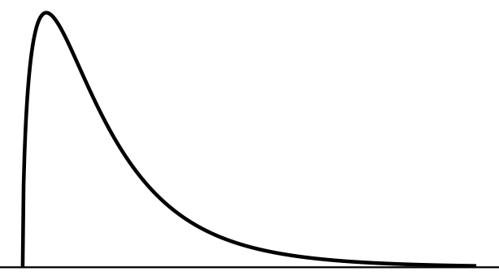
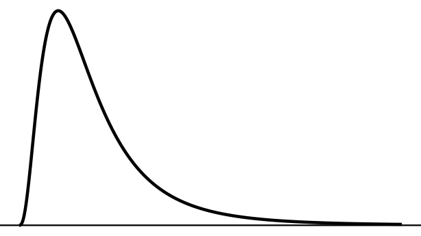

earnings <- c(724, 756, 588, 693, 777, 657, 631, 777, 549, 444,
511, 614, 754, 593, 698, 541, 616, 793, 670, 698,
555, 668, 510, 740, 567)3 Two-Sample Inference
3.1 Two Proportions
Learning Objectives
- Construct and interpret a confidence interval for the difference \(p_1 - p_2\).
- Carry out a \(z\) test for \(H_0: p_1 = p_2\) using the pooled proportion.
- Explain why the test pools the two samples but the CI does not.
Concept
We often compare two groups: urban and rural households, men and women in the labour force, customers of two brands. The parameter of interest is the difference \(p_1 - p_2\), estimated by \(\hat{p}_1 - \hat{p}_2\). For two independent random samples that are large enough, \(\hat{p}_1 - \hat{p}_2\) is approximately normal with standard error \[ \sqrt{\frac{p_1(1-p_1)}{n_1} + \frac{p_2(1-p_2)}{n_2}}. \]
The same idea as in Section 2.3 decides which values go into the standard error:
- Confidence interval: use \(\hat{p}_1\) and \(\hat{p}_2\) separately.
- Hypothesis test: \(H_0\) says \(p_1 = p_2\), so both groups share one proportion. Our best estimate of it combines the two samples, the pooled proportion \[ \bar{p} = \frac{x_1 + x_2}{n_1 + n_2}. \]
Formulas and Conditions
Conditions: two independent random samples; \(n\hat{p} \ge 5\) and \(n(1-\hat{p}) \ge 5\) in each sample.
\((1-\alpha)100\%\) confidence interval for \(p_1 - p_2\) \[ (\hat{p}_1 - \hat{p}_2) \pm z_{1-\alpha/2} \sqrt{\frac{\hat{p}_1(1-\hat{p}_1)}{n_1} + \frac{\hat{p}_2(1-\hat{p}_2)}{n_2}} \]
Test statistic for \(H_0: p_1 = p_2\) \[ z_{\text{cal}} = \frac{\hat{p}_1 - \hat{p}_2} {\sqrt{\bar{p}(1-\bar{p})\left(\dfrac{1}{n_1} + \dfrac{1}{n_2}\right)}} \]
| \(H_1\) | Critical region |
|---|---|
| \(p_1 \ne p_2\) | \(z_{\text{cal}} < z_{\alpha/2}\) or \(z_{\text{cal}} > z_{1-\alpha/2}\) |
| \(p_1 < p_2\) | \(z_{\text{cal}} < z_{\alpha}\) |
| \(p_1 > p_2\) | \(z_{\text{cal}} > z_{1-\alpha}\) |
Example
Example 3.1.1. A survey asks households whether they have any outstanding debt. In urban areas, 171 of 300 households have debt; in rural areas, 165 of 250 households have debt.
- Construct a 95% confidence interval for the difference between the urban and rural proportions.
- At \(\alpha\) = 0.05, test whether the proportion of households with debt is different in urban and rural areas.
Your Turn
TipSolution: Your Turn 3.1.1
\(\hat{p}_A = 0.29\), \(\hat{p}_B = 0.2\), \(\hat{p}_A - \hat{p}_B = 0.09\).
(a) SE \(= 0.0438\); \(0.09 \pm 1.960(0.0438) = 0.09 \pm 0.0858\). 95% CI: (0.0042, 0.1758). We are 95% confident that the difference between the proportions of Brand A and Brand B customers who switched is between 0.0042 and 0.1758.
(b)
Step 1. \(H_0: p_A = p_B \quad H_1: p_A > p_B\)
Step 2. \(\alpha\) = 0.05
Step 3. \(\bar{p} = (58 + 36)/(200 + 180) = 0.2474\); \(z_{\text{cal}} = 0.09/0.0443 = 2.032\)
Step 4. \(z_{0.95} = 1.645\). Critical region: \(z_{\text{cal}} > 1.645\).
Step 5. \(z_{\text{cal}} = 2.032\) falls in the critical region (\(2.032 > 1.645\)), so we reject \(H_0\). That is, the proportion of customers who switched is higher for Brand A than for Brand B at the 0.05 level of significance.
Looking Back: Methods So Far
| Parameter | Estimate | Distribution | Section |
|---|---|---|---|
| \(\mu\) (\(\sigma\) known) | \(\bar{x}\) | \(z\) | 2.1 |
| \(\mu\) (\(\sigma\) unknown) | \(\bar{x}\) | \(t\), df \(= n-1\) | 2.2 |
| \(p\) | \(\hat{p}\) | \(z\) | 2.3 |
| \(\sigma^2\) | \(s^2\) | \(\chi^2\), df \(= n-1\) | 2.4 |
| \(p_1 - p_2\) | \(\hat{p}_1 - \hat{p}_2\) | \(z\) | 3.1 |
Every test so far followed the same five steps and made the decision with the critical region. Section 3.2 introduces a second way to make the decision, the p-value, and shows how to read the results from R.
Formula Summary
| Confidence interval | Hypothesis test | |
|---|---|---|
| Standard error | \(\sqrt{\dfrac{\hat{p}_1(1-\hat{p}_1)}{n_1} + \dfrac{\hat{p}_2(1-\hat{p}_2)}{n_2}}\) | \(\sqrt{\bar{p}(1-\bar{p})\left(\dfrac{1}{n_1}+\dfrac{1}{n_2}\right)}\), \(\bar{p} = \dfrac{x_1+x_2}{n_1+n_2}\) |
| Formula | \((\hat{p}_1-\hat{p}_2) \pm z_{1-\alpha/2}\,\text{SE}\) | \(z_{\text{cal}} = \dfrac{\hat{p}_1-\hat{p}_2}{\text{SE}}\) |
Exercises
3.1.1 In a labour force survey, 45 of 150 women and 62 of 160 men aged 15–24 were not in employment, education or training. Construct a 90% confidence interval for \(p_{\text{women}} - p_{\text{men}}\).
TipSolution: Exercise 3.1.1
\(\hat{p}_1 = 0.3\), \(\hat{p}_2 = 0.3875\), difference \(= -0.0875\), SE \(= 0.0537\), \(z_{0.95} = 1.645\). \(-0.0875 \pm 0.0883\): 90% CI (-0.1758, 0.0008). We are 90% confident that the difference between the proportions of women and men not in employment, education or training is between -0.1758 and 0.0008. The interval contains 0.
3.1.2 A shop tests two price displays. With display 1, 84 of 240 visitors bought the product; with display 2, 96 of 240 bought it. At \(\alpha\) = 0.05, test whether display 1 has a lower purchase rate.
TipSolution: Exercise 3.1.2
Step 1. \(H_0: p_1 = p_2 \quad H_1: p_1 < p_2\)
Step 2. \(\alpha\) = 0.05
Step 3. \(\hat{p}_1 = 0.35\), \(\hat{p}_2 = 0.4\), \(\bar{p} = 0.375\); \(z_{\text{cal}} = -0.05/0.0442 = -1.131\)
Step 4. \(z_{0.05} = -1.645\). Critical region: \(z_{\text{cal}} < -1.645\).
Step 5. \(z_{\text{cal}} = -1.131\) does not fall in the critical region (\(-1.131 > -1.645\)), so we accept \(H_0\). That is, the purchase rates with the two displays are equal at the 0.05 level of significance.
3.2 P-values and R Output
Learning Objectives
- Explain what a p-value is and use it to make the decision of a test.
- Read the output of
t.test()in R: test statistic, df, p-value, CI and estimate. - Check that R output agrees with a calculation by hand.
- Choose the R output whose alternative hypothesis matches the research question.
Concept
So far we have decided by comparing the test statistic with a critical value. Statistical software gives a second, equivalent way: the p-value.
Example. In Example 2.2.2 (rider earnings, \(H_1: \mu > 600\)), \(t_{\text{cal}} = 2.326\) with df = 24. The p-value is the area to the right of 2.326 under the \(t\) curve, because \(H_1\) points to the right. It is about 0.0144.


| \(H_1\) | p-value |
|---|---|
| \(>\) | area to the right of the test statistic |
| \(<\) | area to the left of the test statistic |
| \(\ne\) | twice the area beyond the test statistic, in both tails |
The critical-value method and the p-value method always give the same decision. The critical region is the set of test statistics whose p-value is less than \(\alpha\). The printed tables do not give exact p-values for \(t\), \(\chi^2\) or \(F\), so we read p-values from software.
Reading R Output
R is free statistical software. In this course you do not need to write R code, but you must be able to read the command and its output. The function t.test() carries out the \(t\) test for one mean. For the riders in Example 2.2.2 we use t.test(earnings, mu = 600, alternative = "greater"):
t.test(earnings, mu = 600, alternative = "greater")
One Sample t-test
data: earnings
t = 2.3259, df = 24, p-value = 0.0144
alternative hypothesis: true mean is greater than 600
95 percent confidence interval:
611.8887 Inf
sample estimates:
mean of x
644.96 | Line in the output | Meaning | Hand calculation (2.2.2) |
|---|---|---|
t = |
test statistic \(t_{\text{cal}}\) | 2.326 |
df = |
degrees of freedom \(n-1\) | 24 |
p-value = |
p-value | (from the table: \(t_{\text{cal}}\) in the critical region) |
alternative hypothesis: |
\(H_1\) used by R | \(H_1: \mu > 600\) |
mean of x |
\(\bar{x}\) | 644.96 |
The numbers match the hand calculation. Now the decision can be written with the p-value:
p-value = 0.0144 < \(\alpha\) = 0.05, so we reject \(H_0\). That is, the mean daily earnings of riders in Chiang Mai are more than 600 baht at the 0.05 level of significance.
t.test(earnings, mu = 600)
One Sample t-test
data: earnings
t = 2.3259, df = 24, p-value = 0.0288
alternative hypothesis: true mean is not equal to 600
95 percent confidence interval:
605.0649 684.8551
sample estimates:
mean of x
644.96 The 95% CI (605.06, 684.86) is the same as in Example 2.2.2. The test statistic does not change, but the two-sided p-value (0.0288) is twice the one-sided p-value.
The Five Steps with a p-value
From this section on, Step 4 is the p-value instead of the critical value:
- Hypotheses
- Level of significance
- Test statistic (from the output, or calculated by hand)
- p-value (from the output)
- Decision and interpretation: p-value = … [<, \(\ge\)] \(\alpha\) = 0.05, so we [reject / accept] \(H_0\). That is, …
Example
Example 3.2.1. An energy agency records the monthly electricity bill (baht) of 30 randomly selected households. It wants to know whether the mean bill is different from 1,200 baht. R gives:
bill <- c(1371, 1127, 1714, 1150, 1056, 1416, 1176, 1245, 806, 1318,
1042, 1303, 1149, 1197, 1474, 1164, 1409, 1201, 1354, 993,
1548, 1282, 1276, 834, 1342, 1529, 1413, 1298, 1446, 1225)t.test(bill, mu = 1200)
One Sample t-test
data: bill
t = 1.6945, df = 29, p-value = 0.1009
alternative hypothesis: true mean is not equal to 1200
95 percent confidence interval:
1187.180 1336.686
sample estimates:
mean of x
1261.933 Use the output to (a) write the 95% CI and (b) test the hypothesis at \(\alpha\) = 0.05.
Your Turn
t.test(earnings, mu = 620)
One Sample t-test
data: earnings
t = 1.2913, df = 24, p-value = 0.2089
alternative hypothesis: true mean is not equal to 620
95 percent confidence interval:
605.0649 684.8551
sample estimates:
mean of x
644.96
TipSolution: Your Turn 3.2.1
Step 1. \(H_0: \mu = 620 \quad H_1: \mu \ne 620\)
Step 2. \(\alpha\) = 0.05
Step 3. \(t_{\text{cal}} = 1.291\), df = 24
Step 4. p-value = 0.2089
Step 5. p-value = 0.2089 \(\ge\) \(\alpha\) = 0.05, so we accept \(H_0\). That is, the mean daily earnings of riders are equal to 620 baht at the 0.05 level of significance. (This agrees with Section 2.2: 620 is inside the 95% CI.)
Formula Summary
| p-value | probability, assuming \(H_0\) is true, of a test statistic at least as extreme as observed, in the direction of \(H_1\) |
| Decision | reject \(H_0\) if p-value \(< \alpha\); accept \(H_0\) if p-value \(\ge \alpha\) |
| One mean in R | t.test(x, mu = mu0, alternative = "two.sided" / "less" / "greater") |
| CI in R | read from the two-sided output |
Exercises
3.2.1 The electricity agency in Example 3.2.1 now asks whether the mean bill is more than 1,200 baht. Four outputs are shown below.
cat("Output A\n"); t.test(bill, mu = 1200)Output A
One Sample t-test
data: bill
t = 1.6945, df = 29, p-value = 0.1009
alternative hypothesis: true mean is not equal to 1200
95 percent confidence interval:
1187.180 1336.686
sample estimates:
mean of x
1261.933 cat("Output B\n"); t.test(bill, mu = 1200, alternative = "greater")Output B
One Sample t-test
data: bill
t = 1.6945, df = 29, p-value = 0.05044
alternative hypothesis: true mean is greater than 1200
95 percent confidence interval:
1199.83 Inf
sample estimates:
mean of x
1261.933 cat("Output C\n"); t.test(bill, mu = 1200, alternative = "less")Output C
One Sample t-test
data: bill
t = 1.6945, df = 29, p-value = 0.9496
alternative hypothesis: true mean is less than 1200
95 percent confidence interval:
-Inf 1324.036
sample estimates:
mean of x
1261.933 cat("Output D\n"); t.test(bill, mu = 1250, alternative = "greater")Output D
One Sample t-test
data: bill
t = 0.32649, df = 29, p-value = 0.3732
alternative hypothesis: true mean is greater than 1250
95 percent confidence interval:
1199.83 Inf
sample estimates:
mean of x
1261.933 - Which output matches the agency’s question? Explain.
- Write the decision and interpretation at \(\alpha\) = 0.05.
- Why is the test statistic the same in Outputs A, B and C, but not in D?
TipSolution: Exercise 3.2.1
Output B: \(\mu_0\) = 1200 and the alternative hypothesis is “greater than 1200”, which matches \(H_1: \mu > 1200\).
p-value = 0.0504 \(\ge\) \(\alpha\) = 0.05, so we accept \(H_0\). That is, the mean monthly electricity bill is equal to 1,200 baht at the 0.05 level of significance.
The test statistic depends on \(\mu_0\) but not on \(H_1\). A, B and C all use \(\mu_0\) = 1200; D uses \(\mu_0\) = 1250. Only the p-value depends on \(H_1\).
3.2.2 For each p-value, write the decision at \(\alpha\) = 0.05: (a) 0.0312, (b) 0.0500, (c) 0.1847, (d) 5.4e-04.
TipSolution: Exercise 3.2.2
- 0.0312 < 0.05: reject \(H_0\).
- 0.0500 \(\ge\) 0.05: accept \(H_0\).
- 0.1847 \(\ge\) 0.05: accept \(H_0\).
5.4e-04= 0.00054 < 0.05: reject \(H_0\).
3.2.3 A student says: “The p-value is 0.03, so there is a 3% chance that \(H_0\) is true.” Explain what is wrong.
TipSolution: Exercise 3.2.3
The p-value is calculated assuming \(H_0\) is true. It is the probability of a result at least as extreme as the sample result if \(H_0\) were true, not the probability that \(H_0\) is true.
3.3 Paired Means
Learning Objectives
- Recognize paired data from the way the data were collected.
- Reduce paired data to differences \(d\) and use the one-sample \(t\) method on them.
- Construct a CI and carry out a test for the mean difference \(\mu_d\), by hand and from R.
Concept
Data are paired when each observation in one group is matched with one observation in the other group. Common designs:
- Before and after: the same households are measured before and after a policy.
- Matched units: the same products are priced at two shops; twin regions are compared.
Each pair gives one difference \(d = x_1 - x_2\) (for example, after \(-\) before). The pairing removes the variation between units (rich and poor households differ a lot, but each is compared with itself), so we analyse the differences only. A paired test is a one-sample \(t\) test on \(d\) (Section 2.2) with \(H_0: \mu_d = 0\).
Formulas and Conditions
Conditions: pairs are a random sample; the differences are approximately normal.
With \(n\) pairs, \(\bar{d}\) the mean and \(s_d\) the standard deviation of the differences:
\((1-\alpha)100\%\) confidence interval for \(\mu_d\) \[ \bar{d} \pm t_{1-\alpha/2,\,n-1}\,\frac{s_d}{\sqrt{n}} \]
Test statistic for \(H_0: \mu_d = 0\), with df \(= n-1\) \[ t_{\text{cal}} = \frac{\bar{d}}{s_d/\sqrt{n}} \]
In R: t.test(after, before, paired = TRUE, alternative = ...) uses \(d\) = after \(-\) before (first argument minus second).
Example
Example 3.3.1. The government gave a cash transfer to low-income households. A researcher recorded the monthly spending (baht) of 10 households in the month before and the month after the transfer. Did mean spending increase?
| Household | Before | After | d |
|---|---|---|---|
| 1 | 14,570 | 16,140 | 1,570 |
| 2 | 12,550 | 14,740 | 2,190 |
| 3 | 14,270 | 14,840 | 570 |
| 4 | 12,370 | 14,220 | 1,850 |
| 5 | 12,130 | 12,960 | 830 |
| 6 | 12,420 | 13,790 | 1,370 |
| 7 | 15,090 | 16,590 | 1,500 |
| 8 | 16,280 | 17,840 | 1,560 |
| 9 | 15,050 | 14,380 | -670 |
| 10 | 13,610 | 13,280 | -330 |
- Construct a 95% confidence interval for the mean change in spending.
- At \(\alpha\) = 0.05, test whether mean spending increased after the transfer.
Reading R Output
before <- c(14570, 12550, 14270, 12370, 12130, 12420, 15090, 16280, 15050, 13610)
after <- c(16140, 14740, 14840, 14220, 12960, 13790, 16590, 17840, 14380, 13280)t.test(after, before, paired = TRUE, alternative = "greater")
Paired t-test
data: after and before
t = 3.5202, df = 9, p-value = 0.003257
alternative hypothesis: true mean difference is greater than 0
95 percent confidence interval:
500.3399 Inf
sample estimates:
mean difference
1044 t = 3.520 and df = 9 match the hand calculation, and mean difference is \(\bar{d}\) = 1044. For the 95% CI we use the two-sided output:
t.test(after, before, paired = TRUE)
Paired t-test
data: after and before
t = 3.5202, df = 9, p-value = 0.006514
alternative hypothesis: true mean difference is not equal to 0
95 percent confidence interval:
373.0951 1714.9049
sample estimates:
mean difference
1044 R gives (373.10, 1,714.90). The hand calculation gave (373.14, 1,714.86). The small difference comes from rounding: the table gives \(t_{0.975,\,9}\) = 2.262, while R uses 2.262157.
Your Turn
wage_before <- c(371, 405, 409, 538, 357, 351, 414, 416, 390, 438,
401, 428)
wage_after <- c(388, 460, 425, 562, 315, 379, 413, 412, 398, 418,
401, 439)t.test(wage_after, wage_before, paired = TRUE)
Paired t-test
data: wage_after and wage_before
t = _____, df = 11, p-value = 0.3011
alternative hypothesis: true mean difference is not equal to 0
95 percent confidence interval:
-7.88564 23.21897
sample estimates:
mean difference
7.666667
TipSolution: Your Turn 3.3.1
(a) \(s_d/\sqrt{n} = 24.4776/\sqrt{12} = 7.0661\); \(t_{\text{cal}} = 7.6667/7.0661 = 1.085\) (R: 1.085).
(b)
Step 1. \(H_0: \mu_d = 0 \quad H_1: \mu_d \ne 0\)
Step 2. \(\alpha\) = 0.05
Step 3. \(t_{\text{cal}} = 1.085\), df = 11
Step 4. p-value = 0.3011
Step 5. p-value = 0.3011 \(\ge\) \(\alpha\) = 0.05, so we accept \(H_0\). That is, the training did not change the mean daily wage (the mean difference is equal to 0) at the 0.05 level of significance.
Formula Summary
| Formula | |
|---|---|
| Differences | \(d\) = first \(-\) second for each pair; \(\bar{d}\), \(s_d\), \(n\) pairs |
| \((1-\alpha)100\%\) CI for \(\mu_d\) | \(\bar{d} \pm t_{1-\alpha/2,\,n-1}\,s_d/\sqrt{n}\) |
| Test statistic | \(t_{\text{cal}} = \dfrac{\bar{d}}{s_d/\sqrt{n}}\), df \(= n-1\) |
| R | t.test(x1, x2, paired = TRUE, alternative = ...), \(d\) = x1 \(-\) x2 |
Exercises
3.3.1 Paired or independent?
- The household income of 50 families is recorded in 2024 and again in 2025.
- The wages of 40 randomly chosen workers in Chiang Mai are compared with the wages of 40 randomly chosen workers in Lampang.
- The same 20 products are priced at a supermarket and at a fresh market.
- 30 firms that adopted a new technology are compared with 30 other firms that did not.
TipSolution: Exercise 3.3.1
- Paired (same families twice). (b) Independent (two separate samples).
- Paired (same products at two places). (d) Independent (different firms).
3.3.2 A consumer group priced the same 8 products at Shop A and Shop B. It wants to know whether prices at Shop A are lower on average. Use the output to write the decision and interpretation at \(\alpha\) = 0.05.
shopA <- c(42, 118, 65, 89, 27, 154, 73, 36)
shopB <- c(45, 121, 64, 94, 29, 159, 77, 38)t.test(shopA, shopB, paired = TRUE, alternative = "less")
Paired t-test
data: shopA and shopB
t = -4.1501, df = 7, p-value = 0.002147
alternative hypothesis: true mean difference is less than 0
95 percent confidence interval:
-Inf -1.56252
sample estimates:
mean difference
-2.875
TipSolution: Exercise 3.3.2
\(H_0: \mu_d = 0 \quad H_1: \mu_d < 0\) (\(d\) = Shop A \(-\) Shop B). \(t_{\text{cal}} = -4.150\), df = 7, p-value = 0.0021. p-value = 0.0021 < \(\alpha\) = 0.05, so we reject \(H_0\). That is, prices at Shop A are lower than at Shop B on average at the 0.05 level of significance.
3.4 Two Variances
Learning Objectives
- Read the \(F\) table (Table 7), including lower-tail values from the reciprocal rule.
- Construct and interpret a confidence interval for the ratio \(\sigma_1^2/\sigma_2^2\).
- Test whether two population variances are equal, by hand and with
var.test()in R.
Concept
Is one investment riskier than another? Are prices more stable in one market than in another? These questions compare two variances. We compare them with a ratio, not a difference: \[ F = \frac{s_1^2}{s_2^2}. \] If the two populations are normal with equal variances, this ratio follows an \(F\) distribution with two degrees of freedom: \(\text{df}_1 = n_1 - 1\) (numerator) and \(\text{df}_2 = n_2 - 1\) (denominator). Like \(\chi^2\), the \(F\) distribution is positive and skewed to the right.
The \(F\) test is also the starting point for the next two topics: Section 3.5 uses it to choose between two \(t\) tests, and Chapter 4 (ANOVA) is built on an \(F\) ratio.
Reading the \(F\) Table
Table 7 gives \(F\) values with area 0.90, 0.95, 0.975, 0.99 or 0.995 to the left, one page for each area. Columns are \(\text{df}_1\) (numerator) and rows are \(\text{df}_2\) (denominator). The order of the df matters.
Areas such as 0.025 and 0.05 are not printed. Use the reciprocal rule, which swaps the two df: \[ F_{\alpha,\,\text{df}_1,\,\text{df}_2} = \frac{1}{F_{1-\alpha,\,\text{df}_2,\,\text{df}_1}} \]
Example 3.4.1. Find (a) \(F_{0.95,\,4,\,10}\), (b) \(F_{0.975,\,12,\,15}\), (c) \(F_{0.025,\,12,\,15}\).
TipSolution
Page for 0.95, column 4, row 10: \(F_{0.95,\,4,\,10} = 3.48\).
Page for 0.975, column 12, row 15: \(F_{0.975,\,12,\,15} = 2.96\).
Swap the df and use the 0.975 page: \(F_{0.025,\,12,\,15} = \dfrac{1}{F_{0.975,\,15,\,12}} = \dfrac{1}{3.18} = 0.3145\).




TipSolution: Your Turn 3.4.1
\(F_{0.95,\,3,\,20} = 3.1\)
\(F_{0.975,\,8,\,10} = 3.85\)
\(F_{0.025,\,8,\,10} = 1/F_{0.975,\,10,\,8} = 1/4.3 = 0.2326\)
Formulas and Conditions
Conditions: two independent random samples from normal populations.
\((1-\alpha)100\%\) confidence interval for \(\sigma_1^2/\sigma_2^2\) \[ \left(\frac{s_1^2/s_2^2}{F_{1-\alpha/2,\,\text{df}_1,\,\text{df}_2}},\; \frac{s_1^2/s_2^2}{F_{\alpha/2,\,\text{df}_1,\,\text{df}_2}}\right) = \left(\frac{s_1^2/s_2^2}{F_{1-\alpha/2,\,\text{df}_1,\,\text{df}_2}},\; \frac{s_1^2}{s_2^2}\,F_{1-\alpha/2,\,\text{df}_2,\,\text{df}_1}\right) \] If the interval contains 1, the data are consistent with equal variances.
Test statistic for \(H_0: \sigma_1^2 = \sigma_2^2\), with df \(= (n_1-1,\ n_2-1)\) \[ F_{\text{cal}} = \frac{s_1^2}{s_2^2} \]
| \(H_1\) | Critical region |
|---|---|
| \(\sigma_1^2 \ne \sigma_2^2\) | \(F_{\text{cal}} < F_{\alpha/2,\,\text{df}_1,\,\text{df}_2}\) or \(F_{\text{cal}} > F_{1-\alpha/2,\,\text{df}_1,\,\text{df}_2}\) |
| \(\sigma_1^2 < \sigma_2^2\) | \(F_{\text{cal}} < F_{\alpha,\,\text{df}_1,\,\text{df}_2}\) |
| \(\sigma_1^2 > \sigma_2^2\) | \(F_{\text{cal}} > F_{1-\alpha,\,\text{df}_1,\,\text{df}_2}\) |
In R: var.test(x1, x2, alternative = ...) uses \(F = s_1^2/s_2^2\) with x1 in the numerator.
Example
Example 3.4.2. An investor compares the risk of two mutual funds using their monthly returns (%): 13 months for Fund A and 16 months for Fund B. The sample variances are \(s_A^2\) = 6.3586 and \(s_B^2\) = 1.2101. Assume returns are normally distributed.
- Construct a 95% confidence interval for \(\sigma_A^2/\sigma_B^2\).
- At \(\alpha\) = 0.05, test whether the two funds have different variances (risk).
Reading R Output
fund_A <- c(1.18, 3.79, 0.49, 3.79, 3.81, 1.49, 0.12, 1.04, -3.16, 3.62,
-0.44, 1.78, -3.97)
fund_B <- c(2.93, 1.49, 0.23, 0.59, 1.69, 0.45, 1.99, -0.54, 2.61, 0.31,
-0.5, 1.59, -0.57, 1.77, 1.78, 1.14)var.test(fund_A, fund_B)
F test to compare two variances
data: fund_A and fund_B
F = 5.2548, num df = 12, denom df = 15, p-value = 0.003424
alternative hypothesis: true ratio of variances is not equal to 1
95 percent confidence interval:
1.773311 16.695624
sample estimates:
ratio of variances
5.254821 | Output | Meaning |
|---|---|
F = |
\(F_{\text{cal}} = s_1^2/s_2^2\) |
num df, denom df |
\(\text{df}_1 = n_1 - 1\), \(\text{df}_2 = n_2 - 1\) |
95 percent confidence interval |
CI for \(\sigma_1^2/\sigma_2^2\) |
ratio of variances |
\(s_1^2/s_2^2\) |
R’s CI (1.7733, 16.6956) differs a little from the hand calculation because R uses unrounded \(F\) values.
Your Turn
TipSolution: Your Turn 3.4.2
Step 1. \(H_0: \sigma_X^2 = \sigma_Y^2 \quad H_1: \sigma_X^2 > \sigma_Y^2\)
Step 2. \(\alpha\) = 0.05
Step 3. \(F_{\text{cal}} = 2.8^2/1.9^2 = 7.84/3.61 = 2.172\), df = (10, 20)
Step 4. \(F_{0.95,\,10,\,20} = 2.35\). Critical region: \(F_{\text{cal}} > 2.35\).
Step 5. \(F_{\text{cal}} = 2.172\) does not fall in the critical region (\(2.172 < 2.35\)), so we accept \(H_0\). That is, the variances of the daily price changes of the two stocks are equal at the 0.05 level of significance.
Formula Summary
| Formula | |
|---|---|
| Conditions | independent samples; both populations normal |
| Reciprocal rule | \(F_{\alpha,\,\text{df}_1,\,\text{df}_2} = 1/F_{1-\alpha,\,\text{df}_2,\,\text{df}_1}\) |
| \((1-\alpha)100\%\) CI for \(\sigma_1^2/\sigma_2^2\) | \(\left(\dfrac{s_1^2/s_2^2}{F_{1-\alpha/2,\,\text{df}_1,\,\text{df}_2}},\ \dfrac{s_1^2}{s_2^2}F_{1-\alpha/2,\,\text{df}_2,\,\text{df}_1}\right)\) |
| Test statistic | \(F_{\text{cal}} = s_1^2/s_2^2\), df \(= (n_1-1,\ n_2-1)\) |
| R | var.test(x1, x2, alternative = ...) |
Exercises
3.4.1 Find (a) \(F_{0.99,\,5,\,12}\), (b) \(F_{0.05,\,6,\,20}\), (c) \(F_{0.975,\,24,\,30}\).
TipSolution: Exercise 3.4.1
- 5.06 (b) \(1/F_{0.95,\,20,\,6} = 1/3.87 = 0.2584\) (c) 2.14
3.4.2 A regulator compares the interest rates (%) on personal loans from two groups of lenders: 16 loans from group A and 21 from group B. It wants to know whether rates vary more in group A. Use the output to write the decision and interpretation at \(\alpha\) = 0.05.
rate_bankA <- c(6.97, 6.98, 5.5, 7.42, 9.43, 7.36, 7.9, 6.67, 7.02, 7.95,
6.35, 7.43, 6.71, 7.72, 6.2, 8.68)
rate_bankB <- c(6.93, 6.71, 6.87, 7.09, 7.2, 5.49, 6.85, 6.21, 6.16, 6.42,
7.51, 7.33, 7.3, 6.86, 6.33, 5.88, 6.32, 6.84, 7.17, 6.68,
6.65)var.test(rate_bankA, rate_bankB, alternative = "greater")
F test to compare two variances
data: rate_bankA and rate_bankB
F = 3.5292, num df = 15, denom df = 20, p-value = 0.004783
alternative hypothesis: true ratio of variances is greater than 1
95 percent confidence interval:
1.6018 Inf
sample estimates:
ratio of variances
3.529204
TipSolution: Exercise 3.4.2
\(H_0: \sigma_A^2 = \sigma_B^2 \quad H_1: \sigma_A^2 > \sigma_B^2\). \(F_{\text{cal}} = 3.529\), df = (15, 20), p-value = 0.0048 < \(\alpha\) = 0.05, so we reject \(H_0\). That is, interest rates vary more in group A than in group B at the 0.05 level of significance.
3.5 Two Independent Means
Learning Objectives
- Tell independent samples from paired samples by how the data were collected.
- Use the \(F\) test to choose between the pooled \(t\) test and the Welch \(t\) test.
- Carry out the pooled \(t\) test and CI by hand, and read both tests from R.
Concept
Two independent random samples are drawn from two populations, for example stores using two pricing strategies, or graduates of two universities. We estimate \(\mu_1 - \mu_2\) by \(\bar{x}_1 - \bar{x}_2\). Its standard error depends on whether the two population variances are equal:
- Equal variances (\(\sigma_1^2 = \sigma_2^2\)): combine the two sample variances into one pooled variance \(s_p^2\) and use the pooled \(t\) test with df \(= n_1 + n_2 - 2\). This is calculated by hand.
- Unequal variances: use the Welch \(t\) test. Its df is not a whole number, so we read it from R.
So the method has a first step: compare the variances with the \(F\) test of Section 3.4.
Formulas and Conditions
Conditions: two independent random samples; both populations approximately normal.
Pooled method (equal variances), df \(= n_1 + n_2 - 2\) \[ s_p^2 = \frac{(n_1-1)s_1^2 + (n_2-1)s_2^2}{n_1 + n_2 - 2}, \qquad \text{SE} = \sqrt{s_p^2\left(\frac{1}{n_1} + \frac{1}{n_2}\right)} \] \[ \text{CI: } (\bar{x}_1 - \bar{x}_2) \pm t_{1-\alpha/2,\,n_1+n_2-2}\,\text{SE} \qquad t_{\text{cal}} = \frac{\bar{x}_1 - \bar{x}_2}{\text{SE}} \]
Welch method (unequal variances): read \(t_{\text{cal}}\), df, p-value and CI from t.test(x1, x2, var.equal = FALSE).
| \(H_1\) | Critical region (pooled) |
|---|---|
| \(\mu_1 \ne \mu_2\) | \(t_{\text{cal}} < t_{\alpha/2,\,\text{df}}\) or \(t_{\text{cal}} > t_{1-\alpha/2,\,\text{df}}\) |
| \(\mu_1 < \mu_2\) | \(t_{\text{cal}} < t_{\alpha,\,\text{df}}\) |
| \(\mu_1 > \mu_2\) | \(t_{\text{cal}} > t_{1-\alpha,\,\text{df}}\) |
Example: Pooled \(t\) Test
Example 3.5.1. A retail chain tries two pricing strategies. 12 stores use a discount strategy and 10 other stores use a bundle strategy. Daily sales (units) are recorded:
| Strategy | Sales | n | Mean | Variance |
|---|---|---|---|---|
| Discount | 128, 148, 102, 121, 116, 116, 108, 142, 138, 128, 102, 136 | 12 | 123.75 | 239.2955 |
| Bundle | 119, 124, 109, 133, 91, 113, 106, 105, 112, 104 | 10 | 111.6 | 136.9333 |
- At \(\alpha\) = 0.05, check whether the variances are equal.
- At \(\alpha\) = 0.05, test whether mean sales are higher with the discount strategy.
- Construct a 95% confidence interval for \(\mu_D - \mu_B\).
Reading R Output
discount <- c(128, 148, 102, 121, 116, 116, 108, 142, 138, 128,
102, 136)
bundle <- c(119, 124, 109, 133, 91, 113, 106, 105, 112, 104)var.test(discount, bundle)
F test to compare two variances
data: discount and bundle
F = 1.7475, num df = 11, denom df = 9, p-value = 0.411
alternative hypothesis: true ratio of variances is not equal to 1
95 percent confidence interval:
0.4467023 6.2699696
sample estimates:
ratio of variances
1.747533 t.test(discount, bundle, var.equal = TRUE, alternative = "greater")
Two Sample t-test
data: discount and bundle
t = 2.0413, df = 20, p-value = 0.02732
alternative hypothesis: true difference in means is greater than 0
95 percent confidence interval:
1.884527 Inf
sample estimates:
mean of x mean of y
123.75 111.60 t.test(discount, bundle, var.equal = TRUE)
Two Sample t-test
data: discount and bundle
t = 2.0413, df = 20, p-value = 0.05463
alternative hypothesis: true difference in means is not equal to 0
95 percent confidence interval:
-0.2655939 24.5655939
sample estimates:
mean of x mean of y
123.75 111.60 With var.equal = TRUE R prints Two Sample t-test (pooled); with var.equal = FALSE it prints Welch Two Sample t-test. Check the title before reading the numbers.
Example: Welch \(t\) Test
Example 3.5.2. A consumer researcher records the price (baht) of the same model of headphones at 15 online stores and 12 physical stores. Is the mean price different?
online <- c(1940, 1950, 1920, 1670, 1960, 2060, 1970, 1950, 1980, 1590,
1780, 1630, 1880, 1920, 1710)
physical <- c(2060, 2060, 2160, 2110, 2130, 2030, 2010, 2040, 2170, 2060,
2050, 2140)var.test(online, physical)
F test to compare two variances
data: online and physical
F = 7.2367, num df = 14, denom df = 11, p-value = 0.002223
alternative hypothesis: true ratio of variances is not equal to 1
95 percent confidence interval:
2.154537 22.394556
sample estimates:
ratio of variances
7.23668 t.test(online, physical, var.equal = FALSE)
Welch Two Sample t-test
data: online and physical
t = -5.5038, df = 18.55, p-value = 2.843e-05
alternative hypothesis: true difference in means is not equal to 0
95 percent confidence interval:
-309.7842 -138.8825
sample estimates:
mean of x mean of y
1860.667 2085.000 Your Turn
uni_A <- c(28.5, 25.4, 24.9, 25.2, 21.9, 22.8, 21, 19.1, 20.8, 30.5)
uni_B <- c(17.7, 20.1, 22.4, 23.6, 16.6, 22.2, 23.7, 19.9, 25.5, 21.7,
21.9, 24)var.test(uni_A, uni_B)
t.test(uni_A, uni_B, var.equal = TRUE)
F test to compare two variances
data: uni_A and uni_B
F = 1.8666, num df = 9, denom df = 11, p-value = 0.3264
alternative hypothesis: true ratio of variances is not equal to 1
95 percent confidence interval:
0.5202547 7.3023613
sample estimates:
ratio of variances
1.866621
Two Sample t-test
data: uni_A and uni_B
t = _____, df = 20, p-value = 0.08502
alternative hypothesis: true difference in means is not equal to 0
95 percent confidence interval:
-0.3630677 5.1664011
sample estimates:
mean of x mean of y
24.01000 21.60833
TipSolution: Your Turn 3.5.1
(a) \(F\) test p-value = 0.3264 \(\ge\) 0.05: accept equal variances, so use the pooled \(t\) test.
(b) \(s_p^2 = \dfrac{9(12.8677) + 11(6.8936)}{20} = 9.5819\), SE \(= \sqrt{9.5819(1/10 + 1/12)} = 1.3254\), \(t_{\text{cal}} = (24.01 - 21.6083)/1.3254 = 1.812\).
(c)
Step 1. \(H_0: \mu_A = \mu_B \quad H_1: \mu_A \ne \mu_B\)
Step 2. \(\alpha\) = 0.05
Step 3. \(t_{\text{cal}} = 1.812\), df = 20
Step 4. p-value = 0.0850
Step 5. p-value = 0.0850 \(\ge\) \(\alpha\) = 0.05, so we accept \(H_0\). That is, the mean starting salaries of graduates from the two universities are equal at the 0.05 level of significance.
Formula Summary
| Situation | Method | R |
|---|---|---|
| Paired data | paired \(t\) on \(d\) (Section 3.3) | t.test(x1, x2, paired = TRUE) |
| Independent, equal variances | pooled \(t\): \(s_p^2 = \dfrac{(n_1-1)s_1^2+(n_2-1)s_2^2}{n_1+n_2-2}\), \(t_{\text{cal}} = \dfrac{\bar{x}_1-\bar{x}_2}{\sqrt{s_p^2(1/n_1+1/n_2)}}\), df \(= n_1+n_2-2\) | t.test(x1, x2, var.equal = TRUE) |
| Independent, unequal variances | Welch \(t\) | t.test(x1, x2, var.equal = FALSE) |
| CI (pooled) | \((\bar{x}_1-\bar{x}_2) \pm t_{1-\alpha/2,\,n_1+n_2-2}\,\text{SE}\) | two-sided output |
Exercises
3.5.1 An economist compares the monthly inflation expectations (%) reported by 14 firms in the North and 16 firms in the South. She wants to know whether expectations are higher in the North. Three outputs are shown.
north <- c(4.5, 5.4, 7.6, 9.7, 10, 10.7, 9.7, 8.9, 11.7, 12.6,
5.6, 10.8, 7.1, 9.3)
south <- c(8.1, 8.1, 7.4, 7, 7.8, 6.4, 7.8, 6, 7.8, 8.3,
7.3, 6.2, 7, 6.9, 5.2, 7)cat("Output 1\n"); var.test(north, south)Output 1
F test to compare two variances
data: north and south
F = 8.0762, num df = 13, denom df = 15, p-value = 0.0002742
alternative hypothesis: true ratio of variances is not equal to 1
95 percent confidence interval:
2.761183 24.654312
sample estimates:
ratio of variances
8.076196 cat("Output 2\n"); t.test(north, south, var.equal = TRUE, alternative = "greater")Output 2
Two Sample t-test
data: north and south
t = 2.5738, df = 28, p-value = 0.007822
alternative hypothesis: true difference in means is greater than 0
95 percent confidence interval:
0.5712447 Inf
sample estimates:
mean of x mean of y
8.828571 7.143750 cat("Output 3\n"); t.test(north, south, var.equal = FALSE, alternative = "greater")Output 3
Welch Two Sample t-test
data: north and south
t = 2.4385, df = 15.809, p-value = 0.01347
alternative hypothesis: true difference in means is greater than 0
95 percent confidence interval:
0.4776595 Inf
sample estimates:
mean of x mean of y
8.828571 7.143750 - Which of Output 2 and Output 3 should she use? Explain.
- Write the decision and interpretation at \(\alpha\) = 0.05.
TipSolution: Exercise 3.5.1
In Output 1 the p-value = 0.0003 < 0.05, so the variances are not equal. Use the Welch test, Output 3. (Output 2 assumes equal variances.)
\(H_0: \mu_N = \mu_S \quad H_1: \mu_N > \mu_S\). From Output 3, \(t_{\text{cal}} = 2.439\), df = 15.81, p-value = 0.0135 < \(\alpha\) = 0.05, so we reject \(H_0\). That is, mean inflation expectations are higher in the North than in the South at the 0.05 level of significance.
3.5.2 For each study, say whether you would use the paired \(t\) test or a two-sample (pooled or Welch) \(t\) test.
- The rice yield of 15 farms is recorded before and after an irrigation project.
- The household income of 60 randomly chosen households in Chiang Mai is compared with that of 60 randomly chosen households in Bangkok.
- For each of 12 provinces, the unemployment rate of men is compared with that of women.
TipSolution: Exercise 3.5.2
- Paired (same farms twice). (b) Two-sample: two independent samples; check the variances with the \(F\) test to choose pooled or Welch. (c) Paired (men and women are matched within each province).